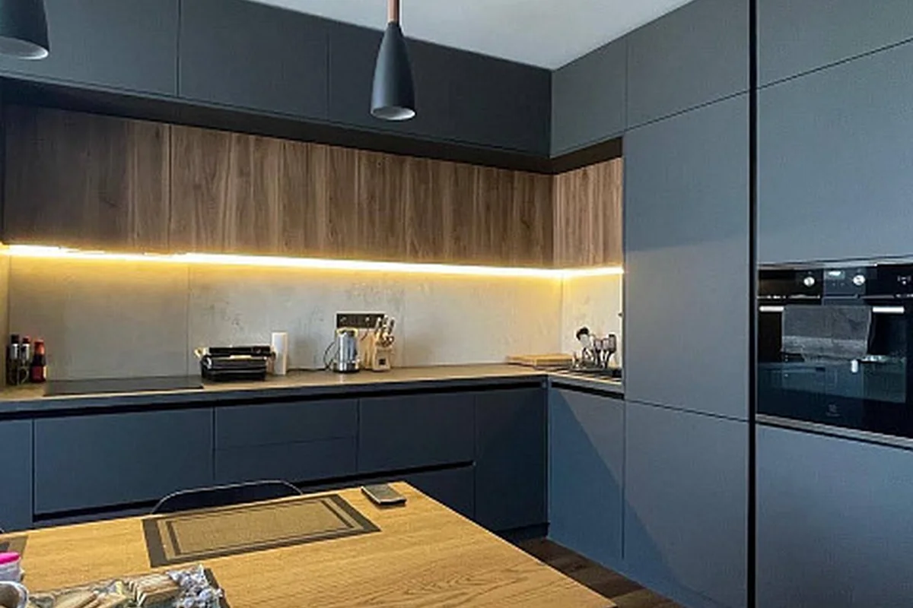

Наша кухня
Тут народжуються смаки, які хочеться повторити.
Без складних технік і рідкісних інгредієнтів. Тільки чесна їжа, перевірена на реальній кухні.
Кулінарний щоденник · 35 рецептів
Проста їжа з характером: 35 перевірених рецептів, зрозумілі кроки й жодного нудного вечора. Обирай настрій — решту зробимо разом.
01 — Настрій
Сім настроїв — від гарячого борщу до холодного матча-лате. Обирай той, що ближчий саме сьогодні.
02 — Хіти
Тягни вбік або гортай стрілками — тут 10 найулюбленіших.
Усі 35 рецептів03 — Рулетка
Натисни — і ми випадково виберемо страву з усіх 35. Жодних «не знаю, що приготувати» до кінця тижня.
Працює краще з голодним шлунком.
Сьогодні готуємо
04 — Пошук
Напиши продукт або страву — знайдемо все, де це смачно працює. Можна навіть одне слово: «сир», «курка», «шоколад».
05 — Кухня
Ми не ускладнюємо. Ми робимо смачно, зрозуміло й так, щоб хотілося повторити ще наступного тижня.

Без складних технік і рідкісних інгредієнтів. Тільки чесна їжа, перевірена на реальній кухні.
Рецепт — це лише початок. Справжній смак з'являється, коли готуєш із настроєм.
Філософія М'яти & Еспресо06 — Лист
Без спаму й нескінченних листів. Тільки один перевірений рецепт на вихідні — щоб не ламати голову, що готувати.